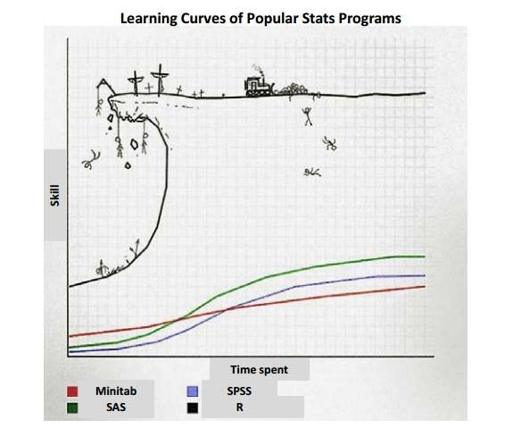

Detalhar o curso e como participar dele
Apresentar e entender a interface do R e o RStudio
Conhecer o fluxo de trabalho (console, scripts, rmarkdown, projetos)
Experimentar os primeiros comandos para a exploração de conjuntos de dados
O “Curso de Introdução à Análise de Dados com o R” está estruturado para, em 8 encontros de duas horas cada, ensinar as e os participantes a explorar questões-problema por meio da análise de conjuntos de dados, aplicando técnicas próprias da linguagem R.
Até mesmo pela extensão do curso (que somará 16 horas totais de carga horária) e pelo perfil de público esperado (pessoas sem conhecimento prévio em R ou em linguagens de programação), seu escopo é bastante limitado.
Neste processo, focaremos:
Na linguagem R, mais especificamente a linguagem derivada do tidyverse
Na realização de análise exploratória de dados
Nossa filosofia em todos os encontros será:
Fazer primeiro, pensar depois
Isto não significa que será um curso superficial, mas que dentro de todas as possibilidades de uso do R, buscaremos nos aprofundar o tanto quanto possível nos aspectos necessários para habilitar a aprendizagem do R. Ou seja, mais que ensinar a usar, pretendemos ensinar a aprender o R de uma forma aplicada e descontraída.
Não espere, portanto, que ao término do curso você sairá por aí programando em R. Caso dedique-se, você será capaz de entender melhor a sintaxe e algumas sutilezas do código e, se dedicar-se um pouco mais, será capaz de substituir programas do tipo aponte e clique como o Microsoft Excel ou Google Spreadsheets pelo R para manipular e visualizar dados.
Isto, por si só, não é nada trivial. Há uma boa discussão a respeito das vantagens da adoção de linguagens computacionais como método de manipulação e análise de dados em relação aos programas convencionais baseados no clique. Para quem quiser entender melhor, sugiro a leitura das reflexões apresentadas aqui neste material elaborado por membros da Faculty Microcomputer Resource Center da Boston College. Mas, de modo geral:
Você tem acesso fácil a todo o histórico de decisões feitas no processo de manipulação e análise dos dados
Aumenta o potencial de replicabilidade dos resultados obtidos, o que é um aspecto desejável de qualquer pesquisa
Os resultados são mais confiáveis
Economiza tempo

Pessoas muito experientes advogam que para cobrir todos os aspectos envolvidos na programação em R são necessários intensos de 5 a 6 semestres. Ou seja, o custo de aprendizado é alto e a curva de aprendizagem não é nada vertical.
O R é um programa e uma linguagem extremamente versáteis. Para pessoas com algum conhecimento prévio em linguagens de programação, o aprendizado pode até ser intuitivo, mas para quem nunca teve contato com computação estatística e programação, começar é a etapa mais difícil. Superadas as barreiras iniciais, entretanto, os usuários em geral terão à mão uma ferramenta poderosa.
dados <- read.csv()names()str()summary()table()prop.table(table())hist()boxplot()plot()barplot()barplot(table())install.packages("ggplot2")Realizar com a função qplot() do pacote ggplot para plotar dois dos gráficos feitos acima com as funções da base do R.
library(ggplot2)
qplot()